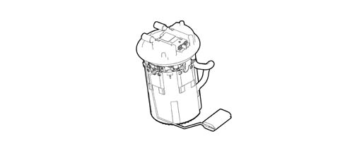
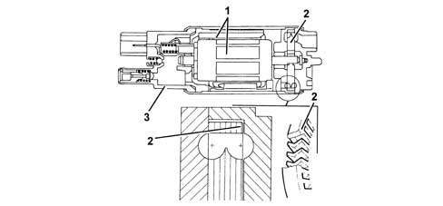
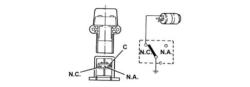
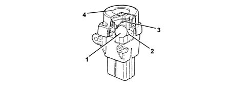
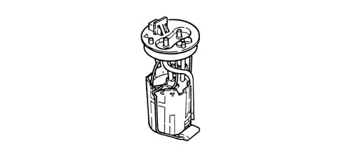
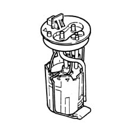
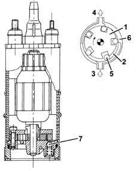

1040A FUEL TANK AND COMPONENTS
- Path
- Descriptions > 10 ENGINE > 1040 FUEL TANK AND PIPES > 1040A FUEL TANK AND COMPONENTS
- Kind
- system description
- Applies to
- engines: 1.9 JTD 8V, 1.9 JTD 16V, 2.4 JTD 20V; all production periods
- Interactive page
- https://sloeber94.github.io/elrnDB/#/939003454
Applies to: engines: 1.9 JTD 16V; all production periods
DESCRIPTION OF COMPONENTS
SUBMERGED PUMP ASSEMBLY COMPLETE WITH LEVEL GAUGE
The fuel pump is part of a single assembly with the level gauge and fuel filter. Components cannot therefore be replaced individually.

Fuel pump
The fuel pump is equipped with a permanent magnet electric motor (1) that controls the pump (2) and a terminal mount cover (3) that contains the electrical and hydraulic connections.
The pump stage is single, peripheral flow type with high performance under low voltage and temperature conditions.
The advantages compared to pumps that operate on volumetric princples are as follows:
- reduced weight;
- limited size.

INERTIA SWITCH
The inertia switch is fitted on the dirver's side near the bolt fixing the running board to the front door pillar. If the vehicle is involved in an impact, it interrupts the connection to earth of the fuel pump and, as a result, the supply of fuel to the injection system.

A steel ball (1) fitted in a tapered housing (2) is normally held in place by the attractive force of an adjacent magnet.
Under specific acceleration loads, the ball is released from the magnetic detent and gradually emerges from the tapered mount. Its upward movement is dependent on cone angle.
A rapid release mechanism (3) over the ball forms a normally closed (NC) electrical circuit.
When struck by the ball, the mechanism changes position from a NC circuit to a normally open (NA) circuit and breaks the fuel pump earth circuit.
The switch may be reset by pressing a button protected by a flexible cover (4).

Applies to: engines: 1.9 JTD 8V; all production periods
DESCRIPTION OF COMPONENTS
SUBMERGED PUMP ASSEMBLY COMPLETE WITH LEVEL GAUGE
The fuel pump is part of a single assembly with the level gauge and fuel filter. Components cannot therefore be replaced individually.

Fuel pump
The fuel pump is equipped with a permanent magnet electric motor (1) that controls the pump (2) and a terminal mount cover (3) that contains the electrical and hydraulic connections.
The pump stage is single, peripheral flow type with high performance under low voltage and temperature conditions.
The advantages compared to pumps that operate on volumetric princples are as follows:
- reduced weight;
- limited size.
INERTIA SWITCH
The inertia switch is fitted on the dirver's side near the bolt fixing the running board to the front door pillar. If the vehicle is involved in an impact, it interrupts the connection to earth of the fuel pump and, as a result, the supply of fuel to the injection system.

A steel ball (1) fitted in a tapered housing (2) is normally held in place by the attractive force of an adjacent magnet.
Under specific acceleration loads, the ball is released from the magnetic detent and gradually emerges from the tapered mount. Its upward movement is dependent on cone angle.
A rapid release mechanism (3) over the ball forms a normally closed (NC) electrical circuit.
When struck by the ball, the mechanism changes position from a NC circuit to a normally open (NA) circuit and breaks the fuel pump earth circuit.
The switch may be reset by pressing a button protected by a flexible cover (4).

Applies to: engines: 2.4 JTD 20V; all production periods
FUEL PUMP
Specifications
System details
The fuel pump is part of a single assembly with the level gauge and fuel filter. Components cannot therefore be replaced individually.

Type
The electric pump submerged in the fuel is volumetric roller type with brush motor and permanent magnet excitation.
Operation
Operating principle
Impeller (1) is turned by the electric motor to create volumes (2) that migrate from intake port (3) to outlet port (4).
These volumes are delimited by rollers (5) that adhere to outer race (6) during motor rotation.
The pump is fitted with two valves, a check valve to prevent the fuel circuit emptying (with the pump off); a second pressure relief valve (7) that bypasses the outlet to the intake when pressure levels exceed 5 bars.

INERTIA SWITCH
Specifications
Function
The inertia switch fitted to the left of the driver's seat cuts off the fuel pump earth connection if the vehicle crashes and thus cuts off the fuel flow to the injection system.
Composition
Operating principles
A steel ball (1) fitted in a tapered housing (2) is normally held in place by the attractive force of an adjacent magnet.
Under specific acceleration loads, the ball is released from the magnetic detent and gradually emerges from the tapered mount. Its upward movement is dependent on cone angle.
A rapid release mechanism (3) over the ball forms a normally closed (NC) electrical circuit.
When struck by the ball, the mechanism changes position from a NC circuit to a normally open (NA) circuit and breaks the fuel pump earth circuit.
The switch may be reset by pressing a button protected by a flexible cover (4).